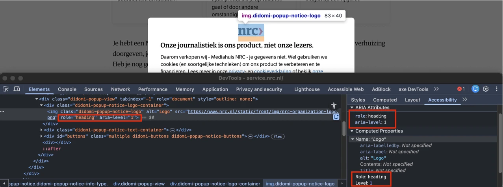
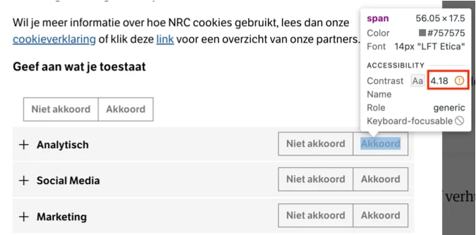
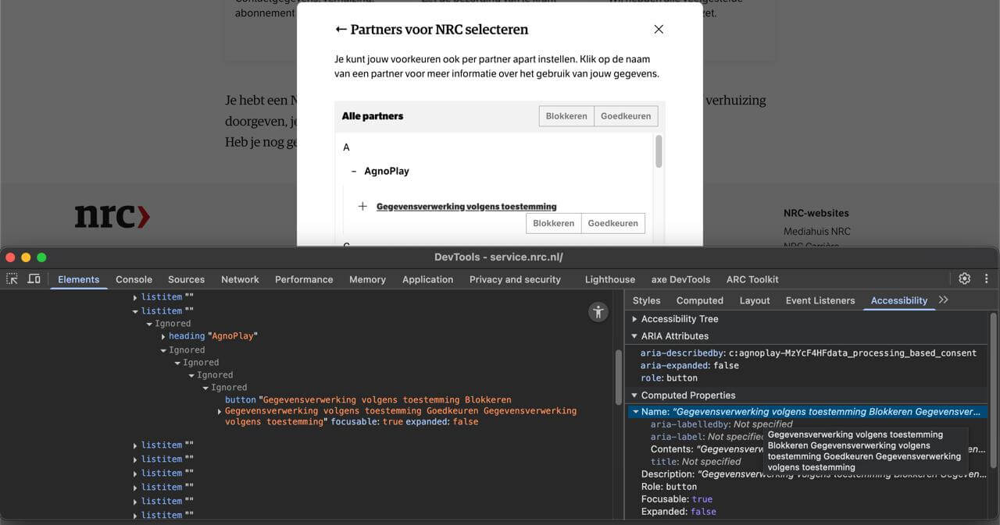
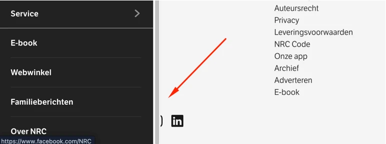

Link naar pagina: Alle pagina's op de website https://service.nrc.nl
#2 - Skiplink verwijst niet naar de juiste plek
Oorspronkelijk rapport: 01 Algemene knelpunten, bevinding 2

Op de pagina's van de website verwijst de skiplink naar het main-element van de pagina. De navigatielinks, zoals "Home", "Bezorging", "Onderbreking" en andere, die visueel in de header staan en op elke pagina terugkomen, maken echter deel uit van de inhoud van het main-element. Hierdoor kunnen bezoekers met de skiplink de herhalende headernavigatie niet overslaan, omdat de toetsenbordfocus op een sectie landt die dezelfde herhalende links bevat.
De skiplink moet verwijzen naar (het begin van) de unieke inhoud op de pagina, zodat een bezoeker alle herhalende of niet-essentiële inhoud kan overslaan.
Oplossing:
Zorg dat de skiplink verwijst naar het juiste startpunt van de unieke inhoud op de pagina.
Haal <nav class="y-menu"> uit het <main> element of voeg een id toe aan de container waar de unieke inhoud staat.
#3 - Er is maar een manier om een webpagina te vinden
Oorspronkelijk rapport: 01 Algemene knelpunten, bevinding 3
Er is geen tweede manier om alle pagina's van deze website te vinden. Het gaat om pagina's als: https://service.nrc.nl/masterclass, https://service.nrc.nl/exclusieve-nieuwsbrieven, https://service.nrc.nl/leesenluister/deweekvannrc, en andere.
Alle pagina's die op de website staan, moeten op meerdere manieren gevonden kunnen worden.
Oplossing:
Zorg dat de webpagina's op meerdere manieren bereikbaar zijn. Dat mag via een zoekveld, een sitemap of een inhoudsopgave.
#4 - Tekstalternatief van het logo is niet voldoende
Oorspronkelijk rapport: 01 Algemene knelpunten, bevinding 4
Wanneer een bezoeker de website voor het eerst opent, verschijnt een cookiedialoogvenster. Het logo bovenaan het dialoogvenster toont de volledige tekst "nrc", maar de alt-tekst is alleen "logo". Het gaat om
<img class="didomi-popup-notice-logo" alt="Logo"
src="https://www.nrc.nl/static/front/img/nrc-organization-logo.png"
role="heading" aria-level="1">In het tekstalternatief staat dus niet alle tekst die in het logo te zien is. Dit moet wel. Zo weten bezoekers die het plaatje niet kunnen zien, ook precies wat er staat.
Oplossing:
Verander de alt-tekst zodat de volledige tekst van het logo erin staat: "nrc".
<img alt="NRC" src="https://www.nrc.nl/static/front/img/nrc-organization-logo.png">#5 - Onjuist gebruik van koprol op logo
Oorspronkelijk rapport: 01 Algemene knelpunten, bevinding 5

In het cookiedialoogvenster heeft het img-element met het NRC-logo de attributen role="heading" en aria-level="1". Dit is onjuist, omdat het element dat als kop is gemarkeerd, geen echte kop is. Het leidt geen inhoud in en geeft geen structuur aan de pagina. Het gaat om
<img class="didomi-popup-notice-logo" alt="Logo"
src="https://www.nrc.nl/static/front/img/nrc-organization-logo.png"
role="heading" aria-level="1">Kop-elementen zijn bedoeld om structuur te geven aan de informatie op een pagina. Bezoekers die schermlezers gebruiken vertrouwen op koppen om te navigeren en de opbouw van de pagina te begrijpen. Zorg dat de tekst die je in een kop-element zet ook echt de functie van kop of tussenkop heeft.
Schermlezers zullen deze kop voorlezen als "Logo, heading level 1". Zo'n soort kop geeft dus geen extra informatie of context. Dat is vooral voor bezoekers die schermlezers gebruiken een probleem. Zij laten de koppen voorlezen om snel de structuur van een pagina te begrijpen, en de inhoud te vinden die voor hen relevant is.
Oplossing:
Verwijder role="heading" en aria-level="1" van de afbeelding.
#6 - Kleurcontrast van tekst is te laag (tekst kleiner dan 24px en niet vetgedrukt)
Oorspronkelijk rapport: 01 Algemene knelpunten, bevinding 6

In het cookiedialoogvenster verschijnt na het activeren van de knop "Zelf instellen" een nieuwe sectie "Cookies bij Mediahuis NRC". In deze sectie staan knoppen met de tekst "Niet akkoord" en "Akkoord" met grijze (#757575) tekst op de lichtgrijze (#F4F4F4) achtergrond. De contrastverhouding is 4,2:1.
Dezelfde kleurcombinatie wordt gebruikt voor de tekst "Stel al uw voorkeuren in om op te slaan en verder te gaan", met een contrastverhouding van 4,2:1.
Wanneer de knoppen "Akkoord" in deze sectie worden ingedrukt, staat de witte tekst op de groene (#63972F) achtergrond. De contrastverhouding is te laag: 3,5:1.
Dezelfde problemen zijn ook aanwezig bij de knoppen "Blokkeren" en "Goedkeuren" in de sectie "Partners voor NRC selecteren". Deze sectie wordt geopend via de knop "Partners bekijken" in de sectie "Cookies bij Mediahuis NRC".
Oplossing:
Deze tekst is kleiner dan 24px en niet vetgedrukt, daarom moet het contrast minimaal 4,5:1 zijn. Op deze pagina staat een instructie die uitlegt hoe je kleurcontrast kunt testen: https://properaccess.nl/hoe-test-ik-kleurcontrast/.
#7 - Status van radioknoppen is onjuist gecodeerd
Oorspronkelijk rapport: 01 Algemene knelpunten, bevinding 7
In het cookiedialoogvenster staan in de sectie "Cookies bij Mediahuis NRC" knoppen "Niet akkoord" en "Akkoord". Bij deze knoppen zijn meerdere toegankelijkheidsproblemen geconstateerd.
In de code zijn dit div-elementen met role="radio" die het ARIA-attribuut aria-pressed gebruiken. Dit is onjuist, omdat ARIA-attributen alleen mogen worden gebruikt in combinatie met rollen die ze ondersteunen. Het aria-pressed-attribuut is bedoeld voor role="button", maar niet voor role="radio". Radioknoppen moeten in plaats daarvan het aria-checked-attribuut gebruiken om hun geselecteerde status aan te geven. Het gebruik van niet-ondersteunde ARIA-attributen maakt het gedrag van de knoppen onduidelijk voor hulpsoftware, waardoor schermlezers onjuiste of verwarrende informatie voorlezen.
Dezelfde problemen zijn aanwezig bij de knoppen "Blokkeren" en "Goedkeuren" in de sectie "Partners voor NRC selecteren".
Daarnaast is de verwachte toetsenbordinteractie met radioknoppen niet geimplementeerd. Dit betreft het gebruik van de pijltjestoetsen om tussen de opties binnen de groep te navigeren.
Het gaat om deze knoppen:
<button class="didomi-components-radio__option"
aria-describedby="didomi-purpose-Bkn4TRGq"
aria-pressed="false" role="radio" tabindex="0">
<span>Niet akkoord</span>
</button>Oplossing:
Gebruik het aria-checked-attribuut om geselecteerde elementen met role="radio" aan te geven en verwijder het niet-ondersteunde aria-pressed-attribuut. Zorg voor ondersteuning van de vereiste toetsenbordinteractie met pijltjestoetsen. Meer informatie is te vinden op de pagina: https://www.w3.org/WAI/ARIA/apg/patterns/radio/.
#8 - Relatie tussen elementen is niet duidelijk
Oorspronkelijk rapport: 01 Algemene knelpunten, bevinding 8

In het cookiedialoogvenster staat in de sectie "Partners voor NRC selecteren" onder "Alle partners" een lijst met partners in alfabetische volgorde. Elke letter, zoals "A", groepeert visueel de partners die bij die letter horen, bijvoorbeeld "AgnoPlay".
In de code is de letter "A" een lijstitem. De partnernaam "AgnoPlay" is ook een apart lijstitem, in plaats van een kind-element van "A". Visueel is een letter dus een lijstitem met een sublijst, maar programmatisch worden ze gepresenteerd als twee aparte lijstitems op hetzelfde niveau. Dit betekent dat de relatie tussen lettergroepen en partneritems niet programmatisch is vastgelegd.
Hierdoor kunnen bezoekers die een schermlezer gebruiken niet begrijpen dat "A" alle partners groepeert waarvan de naam met A begint. De hierarchische relatie gaat verloren, waardoor bezoekers die hulpsoftware gebruiken niet efficient kunnen navigeren. Dit veroorzaakt verwarring en maakt navigatie moeilijker voor toetsenbord- en bezoekers die schermlezers gebruiken.
Oplossing:
De volgende oplossingen zijn mogelijk.
Gebruik een geneste lijststructuur waarin elke letter een lijstitem is dat een andere lijst bevat met partners als lijstitems. Dit zorgt ervoor dat partners zoals "AgnoPlay" als kind-lijstitems onder hun bijbehorende letter worden opgemaakt.
Een andere oplossing is om elke letter (bijvoorbeeld "A") als kop (h3 of h4) te markeren en deze te laten volgen door een lijst (ul) met de partneritems. Dit biedt ook een duidelijke structuur voor hulpsoftware en ondersteunt snelle navigatie via koppen.
#9 - Knoppen bevatten focusbare kind-elementen
Oorspronkelijk rapport: 01 Algemene knelpunten, bevinding 9

In het cookiedialoogvenster staat in de sectie "Partners voor NRC selecteren" onder "Alle partners" een lijst met partners in alfabetische volgorde. In de partnerinformatiesecties, geopend door knoppen zoals "AgnoPlay", staan andere secties met verborgen inhoud: "Gegevensverwerking volgens toestemming". De elementen met de tekst "Gegevensverwerking volgens toestemming" hebben role="button" en bevatten interactieve elementen, namelijk de radioknoppen "Blokkeren" en "Goedkeuren". Interactieve elementen mogen echter geen focusbare kind-elementen bevatten.
Doordat deze radioknoppen binnen het klikbare knop-element zijn geplaatst, kunnen schermlezers en bezoekers die met het toetsenbord navigeren onvoorspelbaar gedrag ervaren. De buitenste knop kan klikken onderscheppen die bedoeld zijn voor de radioknoppen, de focus kan onjuist verschuiven, en de knoppen worden mogelijk niet correct aangekondigd of bediend. Dit schendt de verwachte semantische structuur, verstoort het interactieve gedrag en maakt het moeilijker voor bezoekers die hulpsoftware gebruiken om de interactieve elementen te begrijpen en te bedienen.
Oplossing:
Scheid de interactieve elementen zodat de knop die de partnerdetails opent geen radioknoppen bevat. Plaats de radioknoppen buiten de triggerknop of herstructureer het component zodat elk interactief element onafhankelijk is en niet genest binnen een ander interactief element.
#10 - Naam van de knop beschrijft niet wat de knop doet
Oorspronkelijk rapport: 01 Algemene knelpunten, bevinding 10

In het cookiedialoogvenster staat in de sectie "Partners voor NRC selecteren" onder "Alle partners" een lijst met partners in alfabetische volgorde. In de partnerinformatiesecties, geopend door knoppen zoals "AgnoPlay", staan andere secties met verborgen inhoud: "Gegevensverwerking volgens toestemming". De knoppen die deze inhoud openen hebben ontoereikende toegankelijke namen die de tekst van de volledige knopinhoud bevatten. Zo heeft de knop in de "AgnoPlay"-sectie bijvoorbeeld de volgende toegankelijke naam: "Gegevensverwerking volgens toestemming Blokkeren Gegevensverwerking volgens toestemming Goedkeuren Gegevensverwerking volgens toestemming".
Oplossing:
Geef elke knop een duidelijke, beknopte toegankelijke naam die het doel van de knop beschrijft.
#11 - Staat van submenu niet doorgegeven aan schermlezer
Oorspronkelijk rapport: 01 Algemene knelpunten, bevinding 11
In de header van de website opent de knop "Menu" een navigatiemenu, maar een blinde bezoeker krijgt geen informatie of dit menu open of gesloten is.
Als er een knop is die een menu kan tonen of verbergen, dan moet hulpsoftware de staat van dat menu (zichtbaar of verborgen) kunnen bepalen.
Hetzelfde probleem doet zich voor in het geopende navigatiemenu bij de knop "Service", die een submenu opent zonder de open of gesloten staat in de code door te geven.
De knop met een profielicoon die het menu "Mijn NRC" opent, geeft ook geen informatie over of het menu open of gesloten is. Binnen het menu "Mijn NRC" vertoont de knop "Service" hetzelfde probleem.
Oplossing:
Je kunt hiervoor het aria-expanded-attribuut gebruiken.
#12 - Toetsenbordfocus gaat buiten het navigatiemenu terwijl het menu open blijft staan
Oorspronkelijk rapport: 01 Algemene knelpunten, bevinding 12

In de header van de website opent de knop "Menu" een navigatiemenu. Op dit moment kunnen bezoekers met het toetsenbord uit dit menu navigeren. Doordat het menu de pagina-inhoud naar rechts buiten het scherm verschuift, kan de toetsenbordfocus op de onderliggende pagina-inhoud terechtkomen terwijl het menu open blijft staan. Deze onderliggende elementen kunnen nog steeds toetsenbordfocus krijgen, ook al worden ze door het menu verborgen. Zie bijvoorbeeld de socialmedialinks in de footer, op pagina https://service.nrc.nl/faq/mijn-abonnement de zijbalklinks zoals "Mijn abonnement", en andere.
Hetzelfde probleem doet zich voor wanneer de knop "Service" in het navigatiemenu een submenu opent. De toetsenbordfocus kan het submenu verlaten en naar de onderliggende pagina verschuiven.
Elementen die toetsenbordfocus krijgen, moeten altijd zichtbaar zijn. Is dat niet zo, dan kunnen bezoekers die met het toetsenbord of de schermlezer navigeren in de war raken. Het is cruciaal dat onderliggende interactieve elementen geen toetsenbordfocus krijgen zolang het menu open is.
Oplossing:
Bij dit soort menu's moet je de toetsenbordfocus goed instellen. Als het menu actief is, moet de focus binnen het menu blijven, en mag deze niet op de onderliggende pagina terechtkomen.
Dit kun je op een van de volgende manieren oplossen:
- Hou de focus binnen het menu totdat de bezoeker op de sluitknop heeft geklikt of op de ESC-toets heeft gedrukt.
- Sluit het menu automatisch op het moment dat de toetsenbordfocus eruit gaat.
Op deze pagina staat een instructie om zelf focusvolgorde te testen: https://properaccess.nl/hoe-test-ik-focusvolgorde/.
#13 - Toetsenbordfocus komt niet op een logische plek nadat menu is gesloten
Oorspronkelijk rapport: 01 Algemene knelpunten, bevinding 13
In de header van de website opent de knop "Menu" een navigatiemenu. Binnen dit menu opent de knop "Service" een submenu. Nadat de bezoeker de knop met een pijl in het "Service"-submenu activeert om terug te gaan naar het hoofdmenu, keert de toetsenbordfocus niet terug naar het element dat het submenu opende en verschuift deze ook niet naar het volgende logische item in de navigatie. In plaats daarvan wordt de focus verplaatst naar de eerste link in het menu ("Binnenland"), wat de verwachte focusvolgorde verstoort en toetsenbord- en bezoekers die schermlezers gebruiken kan desoriënteren.
Oplossing:
Zorg dat de focus na het sluiten van het venster terechtkomt op het element waarmee het dialoogvenster werd geopend.
#14 - Toetsenbordfocus komt niet in het paneel met zoekbalk terecht
Oorspronkelijk rapport: 01 Algemene knelpunten, bevinding 14
In de header van de website opent de knop met een vergrootglasicoon een paneel met een zoekbalk. De toetsenbordfocus komt niet in dit paneel terecht wanneer het opent. De focus gaat naar het volgende element (de knop met een profielicoon) voordat het paneel wordt bereikt. Dit is geen logische focusvolgorde. De toetsenbordfocus moet direct in het geopende paneel terechtkomen wanneer het zichtbaar wordt.
Dit probleem voldoet ook niet aan succescriterium 2.4.11, omdat de knop met een profielicoon toetsenbordfocus krijgt terwijl deze visueel verborgen is achter het paneel. Daarnaast verschuift de focus bij het tabben door het paneel uiteindelijk naar buiten het paneel, naar de hoofdpagina, ook al blijft het paneel open en bedekt het een deel van de pagina. Dit kan ertoe leiden dat de focus op verborgen elementen terechtkomt, zoals links en knoppen in de header achter het paneel.
Oplossing:
Bij dit soort panelen moet de toetsenbordfocus goed worden ingesteld. De focus moet in het paneel terechtkomen. Zolang het paneel geopend is, moet de focus in het paneel blijven en niet op de onderliggende pagina terechtkomen. Op deze pagina staat een instructie om zelf focusvolgorde te testen: https://properaccess.nl/hoe-test-ik-focusvolgorde/.
#18 - Elementen die toetsenbordfocus krijgen zijn bedekt door sticky header
Oorspronkelijk rapport: 01 Algemene knelpunten, bevinding 18
Wanneer de website wordt verkleind naar een lagere resolutie, bedekt een sticky header een deel van de pagina-inhoud terwijl de bezoeker van onder naar boven navigeert (met Tab+Shift). Interactieve elementen krijgen nog steeds toetsenbordfocus, maar de focusindicator wordt verborgen achter de sticky header.
Hierdoor kunnen bezoekers die met het toetsenbord navigeren niet zien waar de toetsenbordfocus zich bevindt.
Oplossing:
Zorg ervoor dat de sticky header of footer geen interactieve elementen of hun focusindicatoren bedekt. Je moet hiervoor bijvoorbeeld de z-index aanpassen, elementen herpositioneren of de header dynamisch verkleinen op kleinere schermen.
#19 - Bezoekers die inzoomen tot 200% en 400% kunnen niet alle tekst meer lezen
Oorspronkelijk rapport: 01 Algemene knelpunten, bevinding 19

Wanneer de pagina's van de website worden bekeken op een schermresolutie van 1280 bij 1024 pixels en ingezoomd tot 200%, past het navigatiemenu in de header zich niet aan aan de beschikbare breedte van het scherm. Hierdoor zijn er pagina's waar navigatielinks niet in het zichtbare gebied passen en gedeeltelijk zichtbaar of volledig buiten het scherm vallen, afhankelijk van de pagina. Omdat het menu niet terugloopt, herverdeelt of een alternatieve manier biedt om de verborgen items te bereiken, kunnen bezoekers die tekst vergroten of zoom gebruiken "Veelgestelde vragen" niet volledig lezen.
Dezelfde problemen zijn ook aanwezig bij het inzoomen tot 400%.
Oplossing:
Zorg dat alles nog werkt en leesbaar is als een bezoeker inzoomt tot 200% en 400% op een scherm van 1280 bij 1024 pixels.